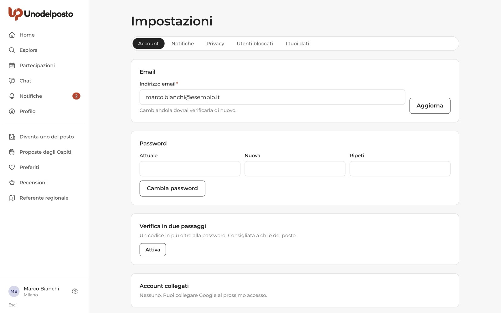
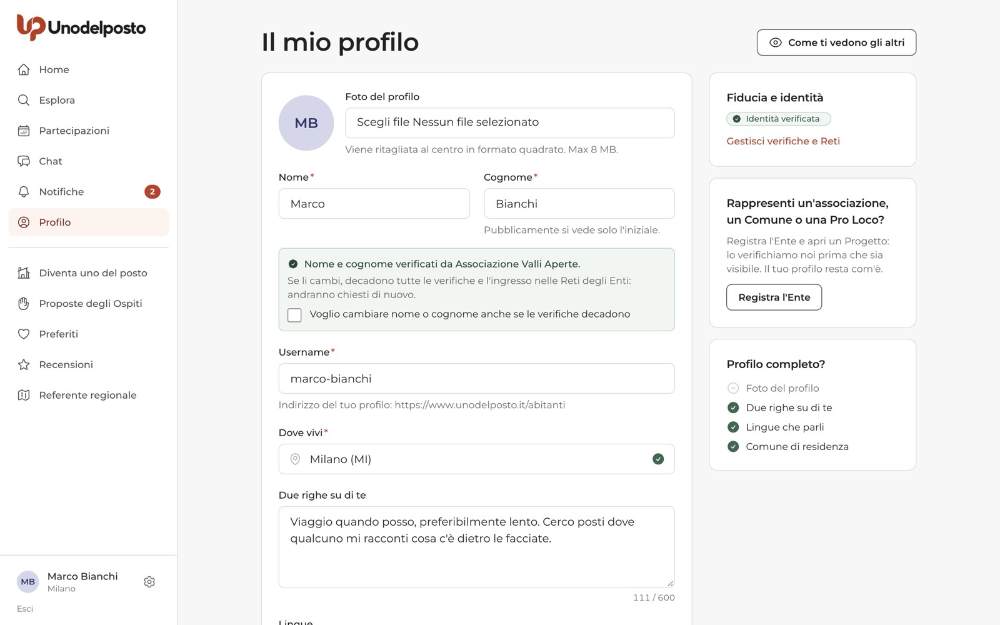

Su Unodelposto ci si incontra dal vivo con persone che non si conoscono ancora. Per questo la piattaforma è costruita intorno alla fiducia: chi partecipa viene scelto, l'indirizzo esatto lo ricevono solo le persone approvate, tutto passa dalla chat di gruppo e dopo l'incontro ci si recensisce a vicenda.
Qui trovi cosa fa la piattaforma per proteggerti, cosa puoi fare tu prima, durante e dopo un incontro, e come usare Segnala e Blocca quando qualcosa non va.
Zero denaro
Nessuno paga e nessuno viene pagato. Chi chiede soldi viene escluso.
Luogo pubblico
Ci si incontra in un luogo pubblico: una piazza, un parco, un bar.
Tutto in chat
Niente numeri di telefono: la chat di gruppo è l'unico canale fino all'incontro.
Persone, non algoritmi
Ogni segnalazione la legge una persona dello staff di Unodelposto.
Le regole che valgono per tutti
Le protezioni attive per ogni account e gli strumenti che hai sempre a disposizione.
Cosa fa la piattaforma
- Email verificata e maggiore età. Per candidarti o proporre un'esperienza serve un'email confermata. Possono iscriversi solo i maggiorenni.
- Approvazione. La persona del posto approva ogni partecipante: nessuno si presenta a sorpresa. Chi viene con accompagnatori li dichiara per nome.
- Punto d'incontro protetto. Sulla scheda dell'esperienza si vede solo la zona, con un cerchio approssimato sulla mappa. L'indirizzo esatto arriva in chat solo a chi è stato approvato.
- Chat di gruppo come unico canale. Nessuno scambio di numeri o profili social prima dell'incontro.
- Recensioni reciproche, a doppio cieco. Dopo l'incontro ci si recensisce a vicenda. Le recensioni diventano visibili quando entrambi hanno scritto, oppure alla chiusura del periodo per recensire: così nessuno scrive per ripicca.
- Controllo dello staff. In questa fase pilota ogni esperienza viene letta dallo staff di Unodelposto prima della pubblicazione: poche categorie di socialità, al massimo 6 Ospiti, al massimo 3 ore, luoghi pubblici.
- Attenzione al denaro. Titoli, descrizioni, messaggi in chat e recensioni che contengono parole legate ai soldi vengono segnalati in automatico allo staff, che li controlla.

I segni di fiducia accanto ai nomi
Accanto al nome di una persona può comparire un segno. Nelle liste e nelle schede ne vedi uno solo, il più forte:
- Rete … (per esempio «Rete GVM»): un'associazione o un Comune del posto conosce questa persona di persona e si fida di lei. È una dichiarazione dell'Ente, non un'assicurazione.
- Identità verificata: un Ente ha incontrato la persona e ha controllato che nome e cognome corrispondano a un suo documento. Dice chi è, non come si comporta.
- Partecipante …: la persona è stata ammessa a un Progetto di un Ente.
Il dettaglio di tutti i segni è sul profilo pubblico. Nessun segno sostituisce le recensioni: leggile sempre. Come si ottengono questi segni lo spiega «Rete, verifiche e profili affidati» (n. 09 di questa serie).
In Esplora puoi mostrare solo le esperienze di chi ha un segno, con le caselle Chi accoglie ha l'identità verificata e Chi accoglie è nella Rete di un Ente della zona. Sono spente di partenza, per non nasconderti le altre esperienze.

Segnalare
Trovi Segnala (con l'icona della bandierina) in questi punti:
- sul profilo pubblico di una persona;
- sulla scheda di un'esperienza, sotto il pulsante Candidati, accanto a Salva;
- sotto ogni messaggio degli altri in chat (la voce «segnala») e nell'elenco dei Partecipanti della chat;
- nella pagina di una Proposta dell'Ospite;
- in fondo alla pagina pubblica di un Progetto («Segnala questo progetto») e di un Ente («Segnala questo Ente»).
- Premi Segnala. Si apre la pagina Segnala, che ti dice cosa stai segnalando.
- Scegli il motivo. Le opzioni sono: Mi è stato chiesto denaro, Contenuto o comportamento inappropriato, Profilo o esperienza falsa, Mi sono sentito in pericolo, Spam o pubblicità, Altro.
- Racconta cosa è successo. Nel campo «Cosa è successo» hai fino a 1.000 caratteri. Più dettagli dai, prima lo staff può intervenire.
- Allega uno screenshot, se puoi. È facoltativo: va bene un'immagine JPG, PNG o WebP.
- Premi Invia la segnalazione. Una persona dello staff la legge entro 48 ore. Chi hai segnalato non saprà chi l'ha segnalato.

Bloccare e sbloccare
Puoi bloccare una persona dal suo profilo pubblico (pulsante Blocca, poi di nuovo Blocca nella finestra di conferma) oppure dall'elenco dei Partecipanti in chat.
Dopo il blocco non vedete più le esperienze l'uno dell'altra, non potete candidarvi l'uno alle esperienze dell'altra e non potete scrivervi. Le candidature in attesa tra voi due vengono annullate. Se siete nella stessa chat, chi è bloccato non vede i tuoi nuovi messaggi.
Per togliere il blocco vai in Impostazioni, scheda Utenti bloccati, e premi Sblocca accanto al nome.

Cosa vedono gli altri di te
Sul profilo pubblico gli altri vedono il tuo nome e l'iniziale del cognome (per esempio «Giulia F.»), il comune, la foto, la presentazione, le lingue, le recensioni e l'anno di iscrizione. Non vedono mai la tua email né il tuo numero di telefono.
- Il cognome completo lo vede solo un Ente, e solo se gli chiedi tu una verifica d'identità o di entrare nella sua Rete.
- In Impostazioni → Privacy puoi scegliere di mostrare solo la provincia invece del comune esatto, e chi può vedere le recensioni che hai scritto.
- In Profilo il pulsante Come ti vedono gli altri ti mostra il tuo profilo pubblico.

Se partecipi
Consigli pratici per prima, durante e dopo l'incontro.
Prima dell'incontro
La prima volta che ti candidi, Unodelposto ti mostra la schermata Prima della tua prima candidatura con cinque consigli. Leggili e premi Ho letto, continua: li vedi una volta sola.

- Leggi il profilo di chi ti accoglie: presentazione, recensioni, eventuali segni di fiducia.
- Sulla scheda dell'esperienza controlla la zona d'incontro e il riquadro Prima di andare.
- Dì a qualcuno dove vai e con chi.
- Porta un documento e il telefono carico.
- Fidati del tuo istinto: se qualcosa non ti torna, non andare. Puoi ritirare la candidatura o uscire dalla chat (Esci dalla chat vale come ritiro della partecipazione).

Durante l'incontro
- Incontratevi nel punto indicato, in un luogo pubblico.
- Nessuno può chiederti soldi, né un «contributo spese» né una mancia. Se lungo la strada vi fermate a prendere qualcosa, ognuno paga per sé, solo se vuole.
- Se ti senti in pericolo, allontanati e chiama il 112.
Dopo l'incontro
- Scrivi la tua recensione: aiuta chi verrà dopo di te. Non la vede nessuno finché non scrive anche l'altra parte, o finché non si chiude il periodo per recensire.
- Se qualcosa non è andato bene, segnalalo anche a incontro finito. Se ti hanno chiesto denaro, scegli Mi è stato chiesto denaro e, se puoi, allega uno screenshot.
Se proponi un'esperienza
Scegli tu chi viene, e la piattaforma ti aiuta a farlo con serenità.
Il patto di chi è del posto
Quando diventi uno del posto accetti cinque impegni:
- Gratis, sempre. Niente denaro, niente beni, niente «contributi spese». Chi chiede viene allontanato.
- Racconto il mio posto, non lo vendo. Condivido ricordi e vita quotidiana, rispettando le Regole della comunità.
- Aperto a tutti, scelgo per fiducia. Non escludo nessuno per sesso, origine, colore della pelle, religione, disabilità o per chi ama. Leggo chi si candida e decido da quello che scrive e da come si è comportato.
- Ci sono, oppure avviso. Sono puntuale. Se non posso, lo scrivo in chat il prima possibile e spiego il motivo.
- Quello che succede nel gruppo resta nel gruppo. Rispetto la privacy di chi viene: niente contatti privati prima dell'incontro, niente foto di altri senza chiedere.
Strumenti che ti proteggono
- Scegli chi viene. Nell'elenco delle candidature vedi presentazione, recensioni come Ospite e annulli all'ultimo minuto. Accanto a ogni candidatura c'è anche Segnala.
- Gratuità dichiarata. Prima di inviare l'esperienza confermi: «Confermo che questa esperienza è completamente gratuita e non chiederò nulla ai partecipanti».
- Parole sul denaro. Se il testo contiene parole legate ai soldi, nella pagina dell'esperienza compare un avviso: lo staff darà un'occhiata. Se è un falso positivo («il bar costa poco»), nessun problema.
- Indirizzo solo agli approvati. Nella scheda pubblica scrivi una zona generica; il punto esatto lo ricevono in chat solo le persone che hai approvato.
- Luogo pubblico. Non stai offrendo un alloggio: vi incontrate in un luogo pubblico.
Cosa succede dopo una segnalazione
Il percorso di una segnalazione, spiegato a grandi linee.
- Arriva allo staff. Ogni segnalazione entra in una coda letta da persone dello staff di Unodelposto. Quelle per pericolo e per richiesta di denaro hanno la precedenza.
- Viene presa in carico. Una persona dello staff la legge, guarda il contesto e le eventuali altre segnalazioni sullo stesso profilo o contenuto. Lo staff legge una chat solo quando c'è una segnalazione che la riguarda.
- Si decide. Le misure sono proporzionate a quello che è successo: nessuna azione, un avvertimento, la rimozione del contenuto, la sospensione dell'account per un periodo, oppure il ban, cioè la chiusura definitiva dell'account.
- Chi ha segnalato riceve un esito. Un messaggio neutro: o che sono stati presi provvedimenti, senza dettagli per riservatezza, o che non sono state riscontrate violazioni delle Regole della comunità.
| Stato | Cosa significa |
|---|---|
| Aperta | La segnalazione è arrivata e aspetta di essere letta. |
| In gestione | Una persona dello staff la sta valutando. |
| Risolta | Lo staff ha deciso, con o senza provvedimenti. |
| Archiviata | Non sono state trovate violazioni. |
Chi riceve un avvertimento lo trova nelle notifiche, con l'invito a rileggere le Regole della comunità. Chi viene sospeso o bannato, quando prova a entrare, vede una pagina che lo spiega e può scrivere allo staff se pensa che ci sia un errore. Se più persone segnalano lo stesso profilo per motivi di sicurezza in poco tempo, l'account può essere sospeso subito, in attesa che lo staff controlli.
Domande frequenti
Chi ho segnalato saprà che la segnalazione è mia?
No. Lo dice anche la pagina Segnala: il segnalato non saprà chi ha segnalato.
Posso dare il mio numero di telefono per comodità?
Meglio di no. Fino all'incontro le Regole chiedono di restare in chat: è l'unico posto dove lo staff può aiutarti se qualcosa va storto.
Il segno «Identità verificata» vuol dire che la persona è affidabile?
No. Dice che nome e cognome sono veri. Per farti un'idea del comportamento leggi le recensioni.
Se blocco qualcuno, se ne accorge?
Non riceve un avviso, ma non vede più le tue esperienze e non può scriverti. Puoi togliere il blocco quando vuoi da Impostazioni → Utenti bloccati.
Chi accoglie mi ha chiesto un «piccolo contributo». È normale?
No. Su Unodelposto non si paga nulla, né prima né dopo. Segnala con il motivo «Mi è stato chiesto denaro».
Ti serve su carta?
La stessa guida in PDF, da stampare o inviare.